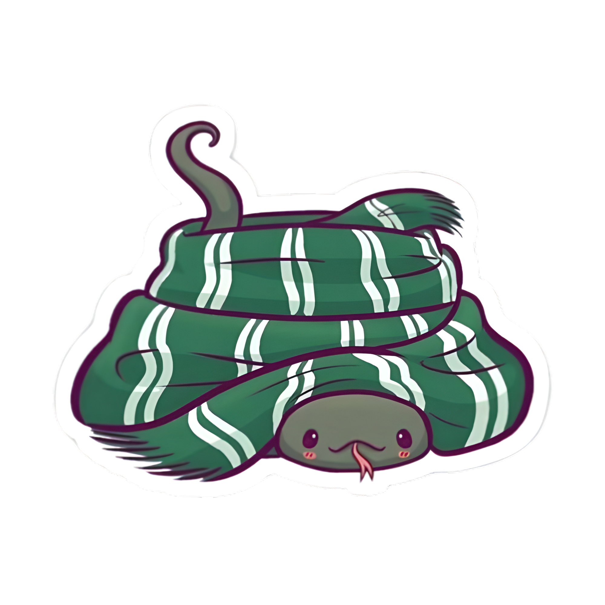

Mi presentación



Hola! Soy Belen, nací y crecí en Cochabamba y soy una entusiasta de la programación.
Actualmente me encuentro estudiando la carrera de Ingeniería de Sistemas en la Universidad Católica Boliviana.
Soy una persona apasionada con las actividades que realizo. Aparte de
mis
proyectos en la programación
y mis estudios, hago muchas otras actividades.
Me gusta mucho
leer, me gusta
ver
películas,
y especialmente me gusta escuchar
música.
Si me quieres contactar siéntete libre de
escribirme un
mensaje
o escribirme por
gmail.